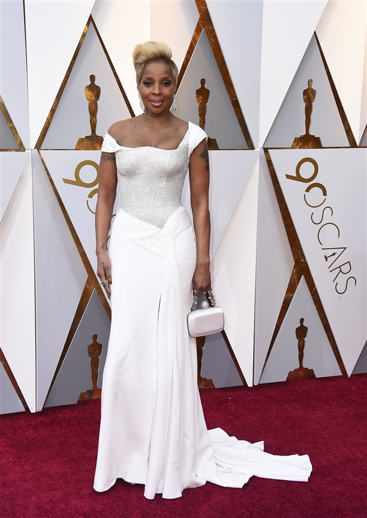

Black girl magic!: Some of the Oscars best dressed of the night
Author: Gabrielle Larochelle
Published: 3/6/18

The 2018 Oscars was a night to remember! Especially for these beautiful black ladies that graced the magical red carpet that night. Check out which actresses rocked the red carpet below:
Tiffany Haddish looks stunning rocking her Eritrean gown honoring her late father!
Viola Davis is a disco QUEEN in this hot pink sequened gown.
Zendaya is a brown goddess in this flowing piece she wore.

Octavia Spencer turned heads when she glided down the red carpet in this forest green ensemble.
Lupita Nyong o showed us what royalty really looks like in this regal ensemble.

Mary J Blige is giving all types of Oshun teas with this flowing white ensemble.